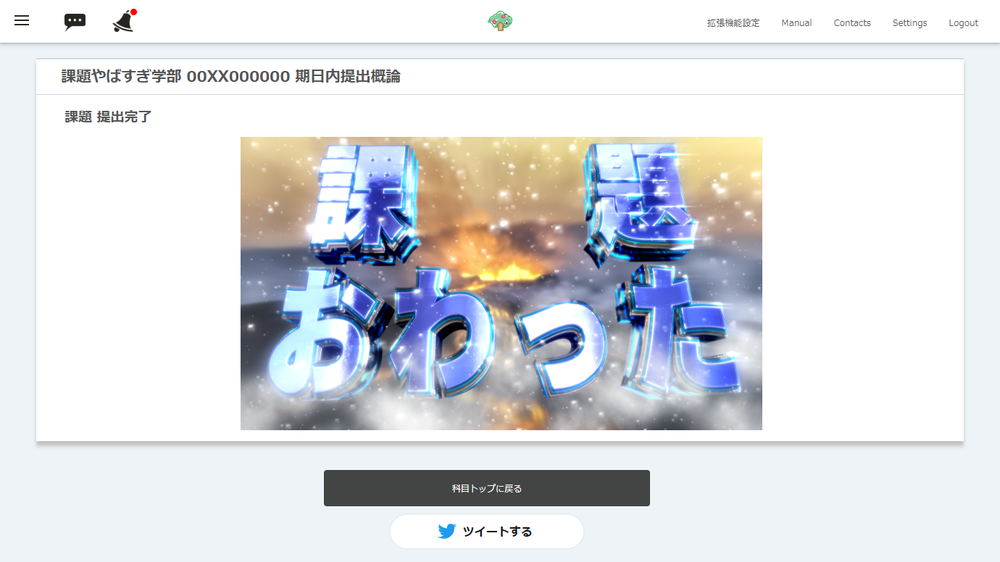

いつもの画面にひと味プラス
課題を頑張って提出したのに、「登録が完了しました。」と表示されるだけ……そんな寂しいLMSとはおさらば。課題提出画面に「課題おわった」と大きな文字が書かれた画像を表示して、あなたの課題提出の瞬間を盛り上げます。
課題を頑張って提出したのに、「登録が完了しました。」と表示されるだけ……そんな寂しいLMSとはおさらば。課題提出画面に「課題おわった」と大きな文字が書かれた画像を表示して、あなたの課題提出の瞬間を盛り上げます。